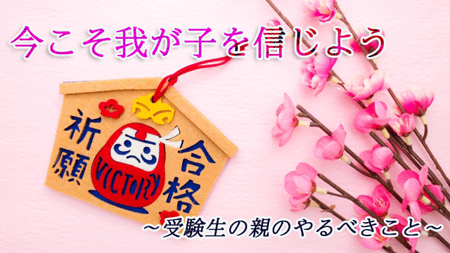

１月に入りいよいよ受験のシーズンが始まった。今年はコロナ禍もあり受験生も親もいつになく不安が募る入試となっている。
そんな状況もあり、昨年末から受験生をもつ親御さんから不安を訴えるメールや問い合わせがいくつか来ているので予定を変更して答えてみようと思う。
まずコロナのことはちょっと脇へ置いて受験生をもつ親の一般的な心情について話すと、我が子が何とか無事合格するかどうかワラにもすがる思いで心配してしまう人が多い。問い合わせてくる親もそうだ。
心配は分からないでもないが、親が過度に動揺している状態は受験をひかえた子どもに良い影響は与えない。そのことをまず理解して欲しい。
このブログで私は数え切れないくらい言ってきたが、もういちど繰り返したい。子を心配することは「お前は心配されるくらい頼りない存在だ」と言ってるのに等しいからだ。つまり信じられないというメッセージだ。これは子どもには厳しい宣告となる。
いま子どもに必要なメッセージは「応援してるよ！」という暖かいサポートの気持ちではないだろうか。
中学受験、高校受験そして大学受験も主役は受験する当の子どもであって親ではない。親にできることは子どもが勉強に専念できるよう環境を整えることでしかない。
年明けまでは志望校の選定やら、伸びない成績などなかなか勉強に集中できなかったかも知れないが、年が明けた今はほとんどの子どもは覚悟を決めて集中していると思う。
だから親も覚悟を決める。受かっても受からなくてもそのガンバリをほめてあげる気持ちになって欲しい。
栄養があり消化の良い食事を作ってあげよう。運動不足になりがちだから少しだけ散歩に連れ出そう。部屋をいつも温かくしてあげよう。
そうして余計なことを言わず、机に向かっている我が子の背中に「頑張ってるね。応援してるよ」という愛の光を送ってみる。
それでも心配だ。動揺してしまう人には次のように考えることを提案したい。
心配してしまう根底には受験をネガティブにとらえているからだと気づくこと。
失敗したら大変だ。将来に影響する。このままヤル気を失くすのではないか。何より親としても世間体が悪い…等々。
こんなネガティブな気持ちが自分の中にないか改めて点検してみる。
しかしよく考えれば、受験は人生においてそれほど重要な位置を占めるものではないと気づくのではないか。そもそも合格＝良いこと、不合格＝悪いこと（失敗）と決まっているものではない。
私の息子3人も高校受験では第１志望に受からなかったが、その教訓を生かして大学受験では挽回できたし、何より進学した高校でも良い仲間に恵まれて満足な学生生活を送ることができた。
こう考えれば人生に失敗と言うものはないといえる。確かにそのときは失敗しか見えないこともあるだろう。受験不合格もそうだし、仕事上の失敗も失恋もそのときは「絶望だ！」と思うしかないこともあるが、後になれば貴重な経験だったり、むしろあの事があったからこそ今の自分があるのだと逆に感謝することもある。
親であるあなただってそうではないだろうか。もし失敗というものがあるとしたら、その出来事を失敗とジャッジするその姿勢こそがまさに失敗―の固定化―ということになる。
これは逆に考えるとすぐ分かる。いわゆる成功者というのは失敗（に見える出来事）を成功に至るプロセスの一部と捉え次のステップ（成長）への踏み台に考える人である。
つまり彼らに失敗は存在していない。
どんな経験もそこから学ぶことはできる。
これは事実であって無理なポジティブ思考ではない。
だから親はもっと子どもを信じよう。
我が子はたかが受験で落ち込むヤワではないと。
このように考えると我が子の受験をネガティブな出来事と捉える必要はまったくないことが分かる。むしろ家族の歴史の中で思い出深い一コマにさえなり得る貴重な出来事といえる。
「コロナ禍の受験が心配」といっても世界的な厄災を前に「自分の受験はどうなるか」と心配しても仕方ない。「コロナで先行き不安」というのは受験生に限った話ではないからだ。そしてこの騒動もいつか過ぎ去る。
後で振り返ったとき「あのとき受験で大変だったが何とか乗り越えた」と親子で懐かしく思い出す日が来るだろう。
その日を信じ今この貴重な時間を子どもと共に過ごすこと。
こういう時だからこそ親は平常心を失わず、我が子の努力―目標達成への突破力―を信じること。
これがいま親に求められるもっとも大切な姿勢だと思う。